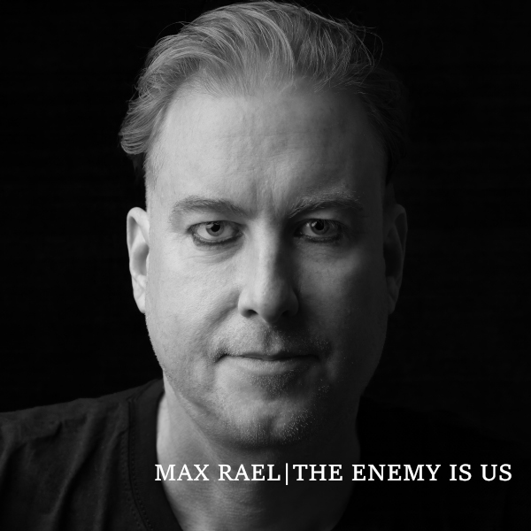

The Enemy Is Us
Max Rael
- Release Date
- 20 June 2025
- Label
- Liquid Len Recording Company
- Formats
- CD, Digital, Limited Lyric Book
- UPC / EAN
- 199199781569
Overview & Production Lore
Debut solo album. A 12-track dark bouquet of minimalist synth, darkwave, and spoken-word electronic pop introducing Rael's 'futuretroist' sound. An alternative sonic universe built on unique sound design, layered loud drums, and outsider lyrical perspectives.
Many of the compositions began life as instrumental pieces on the Raelism EPs (2014-2015), written as an exercise in conveying narrative purely through melody, harmony, and counterpoint. Following his vocal work with Decommissioned Forests, Rael returned to the material to record spoken-word lyrics—confronting alienation, neurodivergent identity, loss, and existential anxiety while preserving a resilient core of hope and gallows humour.
Taken from Walt Kelly's 1970/1971 Pogo Earth Day artwork (itself a subversion of Oliver Hazard Perry's 1813 naval dispatch), the title reflects both internal psychological conflict and wider societal self-sabotage.
Tracklist
- 01 Slightly Less Than Human SINGLE • MAY 2025
- 02 Pressing Against the Glass SINGLE • JUNE 2025
- 03 Becoming Conscious
- 04 Brighter Future (Album Mix) DEBUT SINGLE • APRIL 2025
- 05 Perfect Dream Fades (v2) FOCUS TRACK
- 06 Eight Miles Down and Falling Fast
- 07 The Day the Rain Stopped
- 08 Almost SINGLE • SEPT 2025
- 09 Brain Damage Self-Assessment SINGLE • NOV 2025
- 10 Saviour
- 11 My First Death
- 12 For the Last Time FOCUS TRACK
Credits & Attribution
- Written by: Max Rael
- Vocals, keyboards, guitar & programming: Max Rael
- Guitars on 'My First Death' and 'Almost': Caden Clarkson
- Produced by: Max Rael
- Mixed by: Caden Clarkson & Max Rael
- Mastered by: Pete Maher
- Released by: The Liquid Len Recording Company
- Publicity: Shameless Promotion PR
- Cover artwork & photographs: Filiz Photography (Copyright © 2025 FilizPhotographyUK - must not be altered or sold without photographer's written permission)